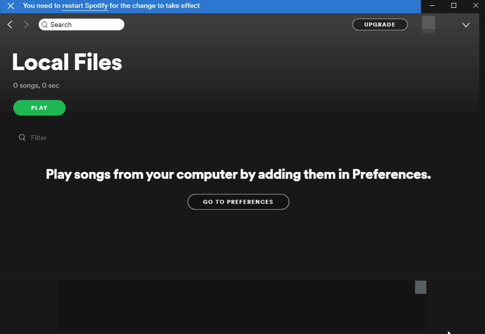
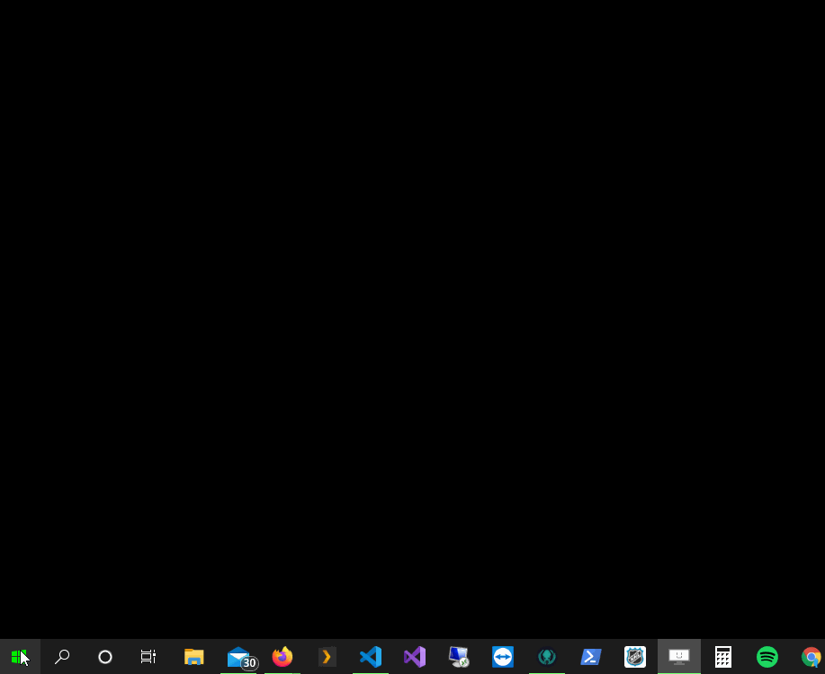

Hearing background noise on my recordings.
Make sure Spytify successfully muted all applications in the Volume Mixer while recording. Only Spotify and Spytify should not be muted.
Cracking/popping sounds may come from :
- Cracking sounds can be heard while playing songs on Spotify and ends up being recorded to the recording file.
- Can be caused by your computer using a low consumption power plan settings that reduces the cpu max performance and impacts at the same time the audio encoding.
Isolate Spotify audio to a different audio endpoint device.
By using the Spytify setting Audio Device, you can move Spytify to a different audio endpoint (install virtual audio cable if you need another one) and use the Windows 10 setting to move Spotify to the same audio endpoint.
- Press Windows key and type Sound mixer options, you should land on the setting page titled App volume and device preferences.
- Make sure Spotify is playing and set the app to the desired endpoint using the Output select list.
- Restart Spotify. Spotify and Spytify should now be isolated from any undesired sound.
If you can’t find the Windows 10 setting, try the section Windows 10 Settings 🡂 System 🡂 Sound, scroll down to the Advanced sound options 🡂 App volume and device preferences setting.

Keep the same order that the playlist for your recordings.
The recording order number option 017_Artist_-_Title.mp3 is useful if you want to burn songs to CDs and that your MP3 player, like those in cars, orders songs by filename.
You will get a CD with songs ordered in the same order than the album or the one shown by Spotify. If it’s a playlist, order it first on Spotify before recording it.

Maximize audio quality in Spotify.
Using Spotify desktop app, click on your profile and go to your settings. In Music Quality section you will find:
- Streaming quality should be set to Very High (or High with Spotify Free).
- Normalize Volume should be turned on.
Click on Show advanced settings:
- Turn off Crossfade songs in the Playback section.
- Turn off Allow smooth transitions between songs in a playlist in Automix section.
- Turn on Enable hardware acceleration in Compatibility section.
Don’t forget to max out the volume inside Spotify Desktop app.

Multiple channels audio endpoint not supported.
Multi channels audio endpoint device are not supported when encoding to MP3, it must be stereo or mono channels. You can change an audio endpoint channels configuration by:
- Typing Sound Settings in Windows menu
- On the right side bar, use the link Sound Control Panel
- Find and select your audio endpoint device in the list
- Click on Configure
- Make sure Stereo channels is selected, otherwise select it, then applies the changes.

Spotify only plays a bit of a track, it stops playing it after some seconds.
Spotify looks for local music files before playing a track. If it finds one matching the metadata of the current song, it will play the local one instead. Cut track means that you started recording this track once and you ended the session too early. Just delete these incomplete tracks in your music directory to solve your issue. You can display local files in your Spotify Desktop app settings in the Local File section with the toggle Show Local Files.
Tracks are detected as an ad.
Podcast, audio book and any other uncommon track type are detected as an ad. Also, Spotify doesn’t return to Spytify the right info when you switch between radios, playlists and albums, resulting in a track detected as an ad. If this happens, replay the current song, if this happens too often, create a playlist of the songs you want to save and play it.
Tracks overlap at the ends of recorded tracks.
Use Audacity (a free editor for audio files) to cut the audio section that you want to remove and export it back to the same audio type. Sometimes, Spotify doesn’t provide the current track info in time resulting in these results.